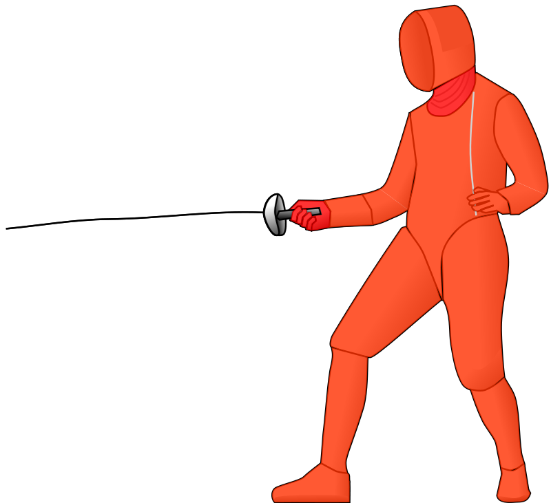

The Three Weapons
Introduction
The three weapons in fencing are Foil, Epee, and Sabre. These three weapons all have drastically different playstyles, equipment, and rules. In fact, the only thing that stays consistent between the three weapons is footwork. For example, a foil fencer who switched to Sabre would be considered a beginner in all aspects except footwork.
Foil
Click on the image to go to the Wikipedia page for Foil
Foil is one of the three weapons in fencing. The foil weapon resembles a
flexible metal stick with a button at the tip. When the blade is stabbed
into a fencer, the button is compressed at a light connected to the blade
goes off, indicating that that fencer has scored a touch. Foil is known as a
point weapon, as one can only score by hitting with the point. Above is an
image highlighting the areas which can be touched to receive a point. If
a touch lands anywhere on the body not in the target area, then it is
called an off-target. Foil fencers wear a vest interwoven with metal threads,
called a lamé. The lamé is connected to a system of wires and lights, the same
system the weapon is connected to. If the foil hits the lamé, the electrical
circuit between the two fencers is completed and a light will appear indicating
that the touch was on target. If the tip compresses but does not complete
the circuit with the lamé, then the off-target light will appear. Basically,
it is just a system to determine whether the fencer hit on target or not. If
both fencers hit at the same time, the referee will decide who gets the point
using "right of way." Right of way will be further explained in the Basic Rules
page. Generally, Foil is medium paced, with some slow moments and some fast ones.
Epee

Click on the image to go to the Wikipedia page for Epee
Epee is the second of the three weapons in fencing. The Epee weapon is similar to the
Foil in that it is also a point weapon, but the Epee is much stiffer and heavier
than the Foil. Above is an image highlighting the target area; as you can see,
the target area is the entire body. Instead of wearing a lamé, Epee fencers will
just wear the standard white uniform. Epee is the only weapon in which double
touches can be scored. No right of way exists in Epee. Generally, Epee is the
slowest paced weapon of the three. Epee bouts frequently run out of time.
Sabre
Click on the image to go to the Wikipedia page for Sabre
Sabre is the last of the three weapons in fencing. The Sabre weapon is not a
point weapon. If any part of the blade, including the side, comes in contact with
the opponent, then a touch will be scored. This allows for slashing and cutting
actions in Sabre, compared to only stabbing actions in Foil and Epee. The target area
for Sabre is the entire upper body, not including the hands or wrists. Since the head
is also a target area in Sabre, Sabre fencers wear a special conductive mask that has
a wire attached to the lamé. Sabre has right of way, but this right of way is different
from Foil's right of way in a few technical aspects. Since it is so easy to score
touches in Sabre, Sabre is the fastest paced weapon of the three. Bouts are so fast
that directors do not even bother to keep a timer for rounds.